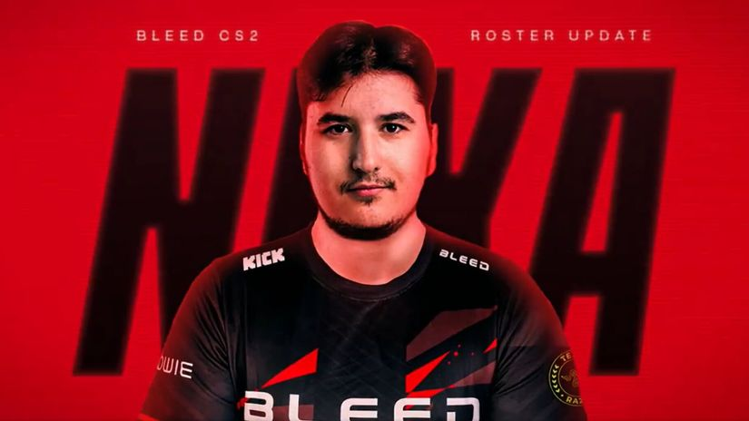

Kralj je stigao: Nexa nastavlja karijeru u BLEED-u
Vesti iz esporta
Nemanja "Nexa" Isaković je prešao u redove BLEED Esportsa, koji je njegov dolazak saopštio porukom: "Kralj je stigao".
Nexa će nastaviti karijeru kod Aleksandra "kassad" Trifunovića u timu, a mesto u startnoj petorci za njega je napravio Josfen "faveN" Baumann.
Iako je često bio osporavan zbog slabijeg individualnog učinka tokom svoje druge epizode u ekipi G2 Esports, Nexa je veoma brzo našao novi dom. Srpski igrač dolazi u BLEED sa mnogo iskustva, i probaće da im pomogne u njihovom glavnom cilju - a to je kvalifikacija na naredni Major u Šangaju.
BLEED trenutno zauzima 36. mesto na HLTV rang listi, a nema sumnje da će u nastavku sezone napasti top 20 plasman i probati da dokažu da su spremni da izazovu vodeće svetske timove.
BLEED u novoj postavi čine: Joakim "jkaem" Myrbostad Nemanja "nexa" Isaković Hampus "Hampus" Poser Tim "nawwk" Jonasson Cai "CYPHER" Watson Aleksandar "kassad" Trifunovič - trener